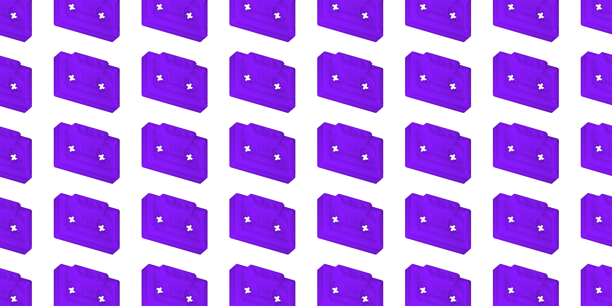

Сотни каналов и ни одной ленты
Релизы тонут в сообщениях. Найти что-то новое сложнее, чем сделать самому.
∞
DEKI — это медиа-слой поверх Telegram. Артисты загружают треки и клипы как обычно, в свой канал. DEKI собирает всё в единый стриминг — без посредников, без алгоритмов, без лишних движений.

Музыка, клипы, лайвы разбросаны по сотням каналов. Чтобы быть в теме, нужно держать у себя бесконечный список чатов, постоянно переключаться и бояться что-то пропустить. Это не discovery — это выживание.
Релизы тонут в сообщениях. Найти что-то новое сложнее, чем сделать самому.
∞На больших платформах артист — заложник алгоритмов и непрозрачных рекомендаций. Аудитория принадлежит платформе, а не автору: сегодня тебя пушат, завтра — хоронят в ленте. Прямой связи со слушателем почти нет.
↘︎Telegram отлично работает с текстом и стикерами, но плеер, дискавери и плейлисты — это боль.
×DEKI читает приватные каналы артистов, собирает музыку и видео в студию и предлагает готовый релиз. Артист подтверждает — и контент появляется в едином медиа-фиде. Слушатели получают нормальный плеер.
Никаких новых привычек, никакого стресса. Те же mp3, mp4 — треки и клипы.
Файлы попадают в студию, DEKI предлагает структуру — артист распределяет по альбомам, синглам и клипам.
Профили, обложки, плейлисты, лайки и комментарии. Прямые эфиры идут прямо в приложении — не с канала.
Не нужно прыгать между чатами. Открыл DEKI — увидел всё свежее и сразу включил.
Артист подключает свой приватный канал в Telegram и добавляет DEKI Music Bot как администратора — иначе бот не видит контент. После этого просто загружай треки и видео как обычно: бот подхватывает их автоматически и переносит в студию — дальше ты сам оформляешь релиз и публикуешь его.
Добавляешь DEKI Music Bot админом — занимает 30 секунд.
Кидаешь треки и видео в свой канал. Никаких форм, никаких CMS.
В студии ты сам прикрепляешь обложки, распределяешь треки и настраиваешь профиль — полный контроль.
Жмёшь «Опубликовать» — и контент уже в общей ленте DEKI.
которого всегда не хватало Telegram. Музыкальная экосистема, где звук снова становится живым: просто, быстро и напрямую — от автора к слушателю, без алгоритмов, лейблов и посредников.
★ ★ ★
Telegram уже у тебя в кармане. Осталось добавить слой, превращающий его в музыкальную платформу нового поколения.